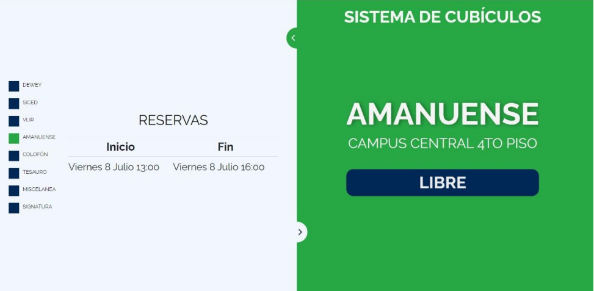

LibreBooking#
software open source reservas
{kind=link}
LibreBooking es un software de código abierto (open source) que se utiliza para gestionar y reservar recursos compartidos en entornos empresariales y organizacionales. Su principal función es permitir la programación y gestión eficiente de salas, equipos, instalaciones y otros recursos, optimizando su uso y evitando conflictos de horarios. Este software es un derivado del proyecto «Booked Scheduler», el cual dejó de distribuirse a partir de la versión 2.8.5. Un programador de la comunidad decidió mantenerlo vivo y en desarrollo activo.
Datos técnicos
✨ Caracterísitcas#
A continuación, se describen algunas características clave y funcionalidades de LibreBooking:
Reservas de Recursos: Permite a los usuarios realizar reservas de salas de reuniones, equipos, laboratorios, vehículos u otros recursos compartidos de manera organizada y eficiente.a. Esta flexibilidad es fundamental para garantizar la adecuada catalogación de los recursos y facilitar su búsqueda y recuperación.
Configuración de Calendarios y cuotas: permite configurar un calendario con horarios y tiempos, además de poner cuotas de reserva a los
Calendario Interactivo: Proporciona una interfaz de calendario visual e intuitiva que muestra las disponibilidades y reservas de los recursos, permitiendo a los usuarios programar sus reservas de acuerdo con la disponibilidad.
Gestión de Usuarios y Roles: Permite la creación de perfiles de usuarios y asignación de roles y permisos, controlando quiénes pueden reservar, modificar o cancelar reservas, y quiénes tienen acceso a la información.
Informes y Estadísticas: Genera informes y estadísticas que brindan una visión general del uso de los recursos, incluyendo datos como las horas reservadas, frecuencia de uso y otros indicadores relevantes.
Anuncios personalizados: Facilita la creación de anuncios personalizados para períodos específicos con el propósito de proporcionar información precisa a los usuarios.
📉 Desvenjatas#
Soporte y Mantenimiento: Debido a su naturaleza como software de código abierto, cuenta con un equipo de mantenimiento conformado por un reducido número de personas. En ocasiones, la corrección de errores o bugs puede experimentar demoras en su implementación oportuna.
Reservas agendadas: Se requiere un control más estricto de los recursos, ya que los usuarios a menudo se ausentan o no asisten a las reservas programadas, lo que obliga a la cancelación manual de dichas reservas. Esto puede ser una tarea tediosa y consumir tiempo, especialmente en entornos donde la programación es intensiva y la administración de recursos es crítica.
🔗 Enlaces útiles#
Instrucciones de instalación: LibreBooking/app
Documentación del desarrollador: LibreBooking/app
📝 Notas#
Nota
Se deben dar correctamente los permisos de escritura en al carpeta ../Web/uploads/images de lectura y escritura al igual que el archivo ../config/config.php, para garantizar que se ejecute correctamente la configuración del servidor.
Nota
Es posible exportar los datos y reservas de la aplicación a través de la API REST, lo que permite crear páginas o sistemas que ofrezcan a los usuarios una visualización más dinámica de los estados de las reservas o se integren de manera efectiva en otros sistemas. Por ejemplo en la biblioteca de la Universidad de Cuenca construimos una inerfaz web con Javascript que muestra a los usuario el estdo de las reservas, puedes revisar la aplicación en biblioUcuenca/tv-booked.
{kind=link}